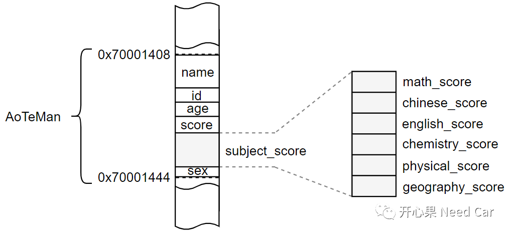
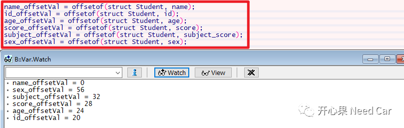
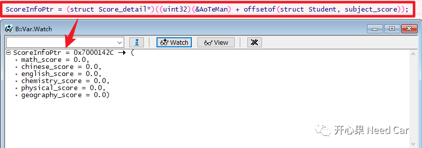
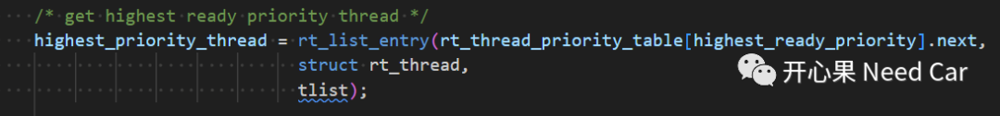
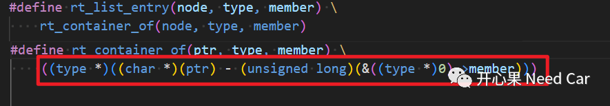

开心果 Need Car · 2023-08-28T07:09:00+08:00 · 微信原文
不管是搞汽车电子还是从事其他行业，扎实的基本功是我们理解上层事物的基础。对于搞汽车电子开发的小伙伴来说，如果基本功不扎实，则很难消化别人的代码或者开发好某个模块。尤其对我这样非科班出身的"程咬金"，只有时刻学习和补能，才能顿悟其一二。本文，分享一点关于C语言的基础知识：如何巧妙计算结构体成员的偏移值，以及这种技巧的使用场景。
1、结构体（Struct）
百度百科中，这样描述"结构体"：“结构体是C语言中一种重要的数据类型，该数据类型由一组称为成员（或称为域，或称为元素）的不同数据组成，其中每个成员可以具有不同的类型。结构体通常用来表示类型不同但是又相关的若干数据。结构体类型不是由系统定义好的，而是需要程序设计者自己定义的。C语言提供了关键字Struct来标识所定义的结构体类型。”
在实际的工程项目中，结构体可以说无处不在，不管在哪种软件框架设计中，都会有它的身影。尤其在模块化的软件设计中，常常需要使用Struct结构描述要抽象的对象（Object）。
举例：描述一个学生，可以根据设计意图，进行如下描述（声明）：
/* 用一个结构体描述学生各科成绩 */struct Score_detail{float math_score;float chinese_score;float english_score;float chemistry_score;float physical_score;float geography_score;};/* 用一个结构体描述学生 */struct Student{char name[20]; //姓名uint32 id; //学号uint32 age; //年龄uint16 score; //总成绩struct Score_detail subject_score; //各科成绩char sex; //性别};
声明一个类型的最终目的是定义对应的数据变量，当一个数据变量被定义以后，意味着此数据类型将占用一定的内存空间。对于struct类型的数据变量而言，所有的元素将连续的占用一块内存空间。比如：定义一个struct Student类型的变量AoTeMan，AoTeMan占用的内存示意如下：

如上图，元素实际仅需要57 Byte空间，由于数据对齐（Align = 4 Byte）,变量AoTeMan实际消耗了60 Byte字节空间。
上图我们可以看出：结构体变量元素的内存空间连续排布，因此，各个元素相对起始地址会存在偏移。
工程上如何计算每个元素相对起始位置的偏移呢？计算偏移又有什么用处呢？
2、巧算结构体元素相对起始地址的偏移量
（一）计算结构体元素相对于起始地址的偏移量
如上图，结构体变量AoTeMan的起始地址为0x70001408，元素id相对起始地址的偏移量为20，最直接的计算方法：
idOffset = (uint32)(&AoTeMan.id) - (uint32)(&AoTeMan);/* 定义一个宏，计算各成员相对于结构体起始地址的偏移量 */#define offsetof(type,member) ((int) &((type *)0)->member)
如上的宏能看懂吗？解释：
type：表示结构体类型
member：表示结构体中的某个元素
如上的宏如何理解？
((type*)0)：转换成type类型的结构体指针，且起始地址为0；
(((type*)0)->member)：引用结构体member成员；
&(((type*)0)->member)：取成员member地址；
((int)&(((type*)0)->member))：将获取的地址强制转换成int类型。
由于起始地址为0，取到结构体成员的绝对地址就是该成员在结构体中的偏移值。所以，这样的写法真的只能说：聪明。
套入如上的宏，计算结构体各个元素相对起始地址的偏移，如下所示：

（二）计算结构体元素的偏移量有什么用处呢？
在软件架构设计中，往往会用一个大的结构体描述要抽象的模块。因此，结构体中往往会嵌套复杂的数据类型。有时，软件在处理对象时，仅仅需要对该对象中的某个元素处理即可，不需处理整个对象。面对这样的场景，仅仅需要定义一个对象元素的数据类型即可，没必要增加内存开销，定义一个对象类型。而此时，就需要知道目标对象元素在结构体中的偏移量，从而进行准确的元素引用操作。
假设，要获取AoTeMan.subject_score的信息，可以进行如下操作：
struct Score_detail* ScoreInfoPtr;ScoreInfoPtr = (struct Score_detail*)((uint32)(&AoTeMan) + \offsetof(struct Student, subject_score));
如上，定义一个struct Score_detail类型的指针变量即可，运行示意如下：

如上的示例可能相对简单，咱们不妨看看大神的操作，比如：RTThread中，定义宏rt_list_entry获取ready队列中最高优先级线程的操作，如下所示：


往期精彩回顾
Autosar网络管理：为什么PN功能更节能？
基于Aurix的以太网实践：TCP Client实现坑点
CAN FD通信：数据段错误，错误帧的速率是500Kbps还是2Mbps？